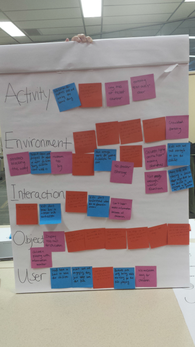
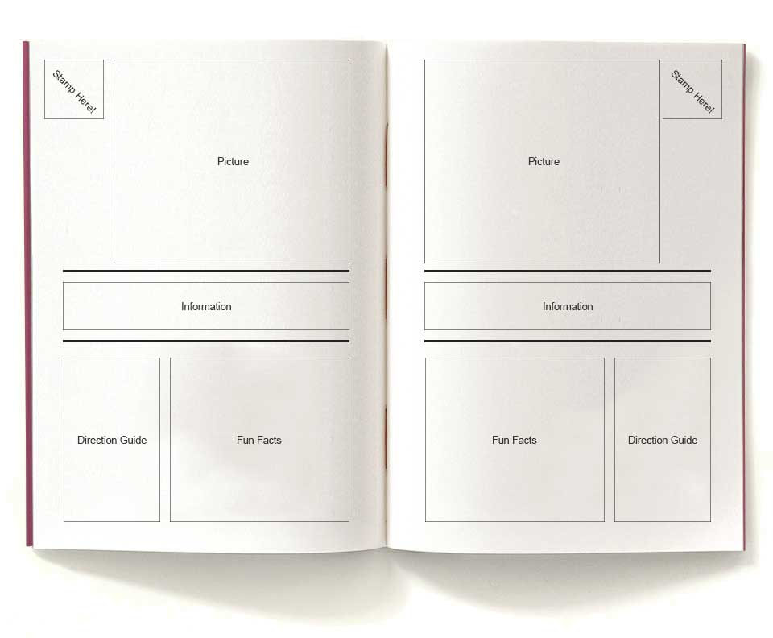
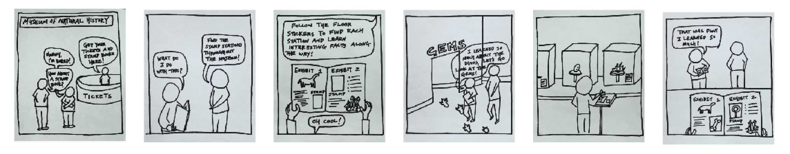
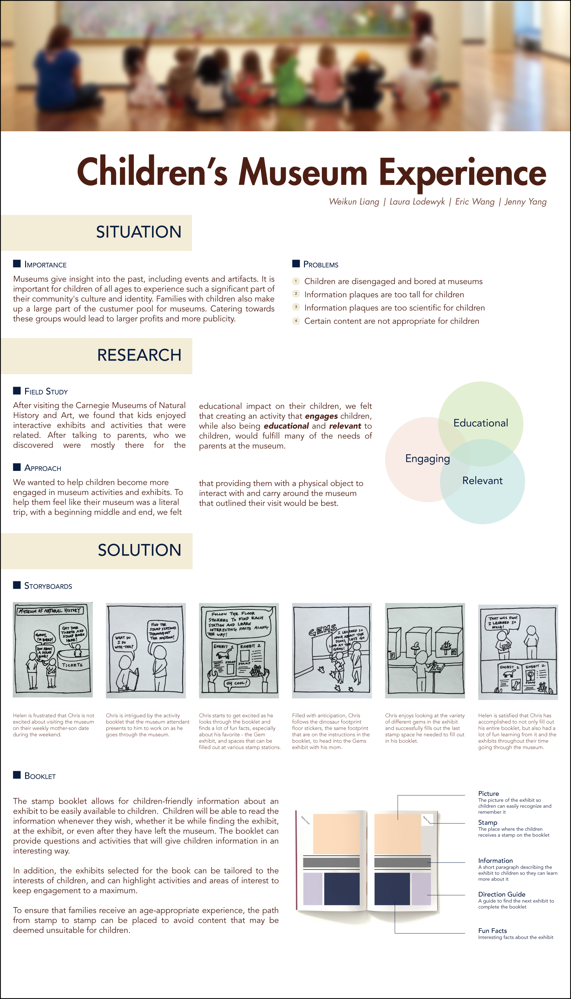

Project Description
In Information Design, one of our projects was to research about a museum and design an information poster about the problems, and potential solutions.
Problem Space Clustering
Using the AEIOU Framework, we clustered our problems into different categories - Activity, Environment, Interaction, Object, and User.
After clustering the problems we found, we immediately saw the concentration of the problems in the Environment category.
Our team believes that problems with the museum can be classified into logistical problems, problems that arise because the designer of the museum might not have considered children when designing the museum, and problems that occur due to parents and kids wanting different things.

Emergent Theme
A big problem that we found which was less evident by observation but more by interviews is that parents and kids seemed to have interests in different things in the museum and it is rare to see them interested in the same things. One of our observations was that when parents were looking at the exhibits they liked, their children were often just running around, or following them, and not paying much attention to the exhibits. The children were more interested in the playground area, but when parents are there, the parents seemed very bored when they are sitting there waiting for their children to finish playing in the playground. Our team believes that the museum as a whole is not the ideal place for a family bonding experience because it is often tiring for parents to look after their children and enjoy the exhibits at the same time. This results in parents not having a fun time in the museum, and at the same time, the kids are also limited in the places they can go to because they need to go with their parents to certain places that parents are interested in going.
Proposed Solution
We propose a solution where in order to keep the children interested too, the museum will provide a stamp booklet that allows for children-friendly information about an exhibit to be easily available to children. Children will be able to read the information whenever they wish, whether it be while finding the exhibit, at the exhibit, or even after they have left the museum. The booklet can provide questions and activities that will give children information in an interesting way.
In addition, the exhibits selected for the book can be tailored to the interests of children, and can highlight activities and areas of interest to keep engagement to a maximum.

Storyboard

Final Design
